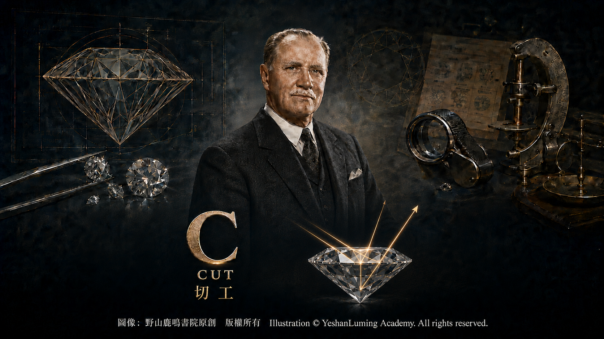
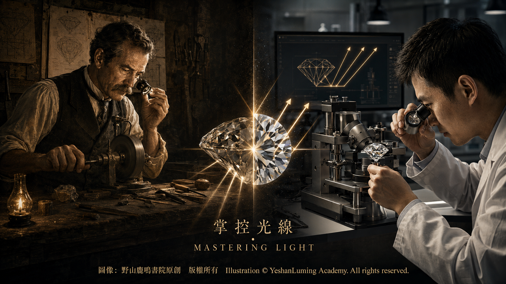

切工的藝術·光如何被人類掌控The Art of Cut: How Humanity Masters Light
The World of Gemstones · Diamond SeriesThe Art of Cut: How Humanity Masters Light
The World of Gemstones · Diamond Series切工的藝術·光如何被人類掌控
寶石世界·鑽石篇
寶石世界·鑽石篇（118）The World of Gemstones · Diamond Series (118)
在4C之中，顏色與淨度主要反映鑽石天然形成的條件，克拉重量既取決於原石，也受到切割取捨的影響；而切工，Cut，則最直接體現人類的設計、判斷與工藝。
也正因如此，切工在鑽石世界裡，始終帶著一種特殊的地位。它不只是切割技術問題，更是一門結合了數學、經驗、審美與風險判斷的工藝。因為再好的原石，如果切得不好，也可能無法充分展現原有的價值；而一顆在顏色、淨度或重量方面並非頂級的鑽石，如果切工優秀，也可能充分展現自身的亮度、火彩與閃光。
從寶石學的角度看，切工所影響的，首先是鑽石與光線相互作用的方式。光線到達鑽石後，會在表面和內部發生反射、折射與色散，並經由不同刻面重新射出。當刻面排列、角度與比例協調時，鑽石能夠把周圍環境中的光以明亮而富有變化的方式呈現給觀察者，形成我們看到的亮度、火彩與閃光；如果設計與比例失衡，過多光線可能從不利方向逸出，使鑽石正面出現黯淡、漏光或明暗分布不均的區域。
因此，切工的本質，其實是在控制光。
GIA對標準圓形明亮式鑽石的切工評價，綜合考慮七項因素：亮度、火彩、閃光、重量比、耐久性、拋光和對稱性。前三項評價鑽石正面朝上時的視覺表現，後四項則反映它的設計與工藝品質。這裡所說的切工，並不只是鑽石的外形，而是整體光學表現、設計合理性與工藝精度的綜合評估。
很多人會把切工品質、外形輪廓與切割式樣混為一談，這其實是一個常見誤解。圓形、橢圓形、梨形和心形主要描述鑽石正面朝上時的輪廓；明亮式、階梯式和混合式則描述刻面的排列方式。切工品質所回答的，是刻面設計、比例、拋光、對稱性以及整體視覺表現是否優秀。換句話說，外形輪廓回答的是「長什麼樣」，切工品質回答的則是「做得好不好」。
在4C之中，顏色與淨度主要反映鑽石天然形成的條件，克拉重量既取決於原石，也受到切割取捨的影響；而切工，Cut，則最直接體現人類的設計、判斷與工藝。
也正因如此，切工在鑽石世界裡，始終帶著一種特殊的地位。它不只是切割技術問題，更是一門結合了數學、經驗、審美與風險判斷的工藝。因為再好的原石，如果切得不好，也可能無法充分展現原有的價值；而一顆在顏色、淨度或重量方面並非頂級的鑽石，如果切工優秀，也可能充分展現自身的亮度、火彩與閃光。
從寶石學的角度看，切工所影響的，首先是鑽石與光線相互作用的方式。光線到達鑽石後，會在表面和內部發生反射、折射與色散，並經由不同刻面重新射出。當刻面排列、角度與比例協調時，鑽石能夠把周圍環境中的光以明亮而富有變化的方式呈現給觀察者，形成我們看到的亮度、火彩與閃光；如果設計與比例失衡，過多光線可能從不利方向逸出，使鑽石正面出現黯淡、漏光或明暗分布不均的區域。
因此，切工的本質，其實是在控制光。
GIA對標準圓形明亮式鑽石的切工評價，綜合考慮七項因素：亮度、火彩、閃光、重量比、耐久性、拋光和對稱性。前三項評價鑽石正面朝上時的視覺表現，後四項則反映它的設計與工藝品質。這裡所說的切工，並不只是鑽石的外形，而是整體光學表現、設計合理性與工藝精度的綜合評估。
很多人會把切工品質、外形輪廓與切割式樣混為一談，這其實是一個常見誤解。圓形、橢圓形、梨形和心形主要描述鑽石正面朝上時的輪廓；明亮式、階梯式和混合式則描述刻面的排列方式。切工品質所回答的，是刻面設計、比例、拋光、對稱性以及整體視覺表現是否優秀。換句話說，外形輪廓回答的是「長什麼樣」，切工品質回答的則是「做得好不好」。
在各種鑽石外形與切割式樣之中，圓形明亮式最能體現切工的重要性。現代圓形明亮式鑽石通常具有57個刻面；如果底尖被磨成一個小刻面，則共有58個。這些刻面並不是隨意安排的，而是數百年來切割師不斷試驗、研究與修正的結果。一顆來自地幔深處的天然晶體，最終能夠展現如此精密的光學效果，本身就是自然與人類智慧共同完成的結果。
如果亭部過深或過淺，或者冠部、亭部與臺面的比例彼此失衡，光線都可能從側面或底部逸出，使鑽石正面出現暗區或漏光。只有當臺面、冠部、亭部、腰圍以及各組刻面之間形成協調的角度與比例時，鑽石才能呈現良好的整體光學表現。
這也就是為什麼切工常被視為4C中最複雜的一項。它不像克拉重量那樣可以用一個數值直接表示，也不能僅靠單一比例決定優劣。切工的許多參數雖然都可以精確測量，但最終評價還必須結合人眼所見的亮度、火彩、閃光與明暗圖案，以及重量比、耐久性、拋光和對稱性。切工要求的不只是精確，更是整體平衡。
對符合分級條件、處於D至Z顏色範圍內的標準圓形明亮式鑽石，GIA將整體切工分為Excellent、Very Good、Good、Fair和Poor五個等級。Excellent是這一量表中的最高等級，代表鑽石在正面外觀、設計和工藝方面達到了優秀的綜合表現，通常具有良好的亮度、火彩、閃光及明暗圖案。對多數異形鑽石，GIA報告通常分別評定拋光與對稱性，而不給出同樣形式的整體切工等級。這一點，也使標準圓形明亮式鑽石的切工等級成為影響價格的重要因素之一。
但切工的意義，並不只在於分級。它還意味著取捨。
一顆原石在切割之前，切割師往往要先作出艱難判斷：究竟是保留更多重量，還是追求更好的光學效果？
這個問題，從來沒有簡單答案。保留重量，可能意味著成品克拉數更高，但比例未必理想；追求更好的切工，則可能要犧牲相當一部分原石。很多時候，一刀落下，不只是改變形狀，而是在重量、價格、美感與未來命運之間作出的一次關鍵而難以逆轉的選擇。
也正因如此，世界上一些著名的鑽石切割師與切割家族，長期以來都享有很高聲望。他們不只是工匠，更像是能夠讀懂晶體的人。許多切割技藝來自家族傳承，而一些歷史上的著名鑽石，也往往因為某位切割師的判斷與手藝，才真正成為傳世名鑽。關於這些切割師、家族與名鑽之間的故事，我們後面也會專門為您介紹。
從天然材料與寶石工藝的關係來看，鑽石原石本身已經非常稀有，而要在充分了解晶體結構、解理方向、內部應力與內含物分布的前提下，避免意外破裂，並將它加工成最能展現光彩的形態，更是一項高難度的人類技藝。天然之物的鑽石到了這一步，才真正進入工藝與文明的範圍。
如果說前面的三個C，更多是在認識鑽石所具有的天然條件，那麼最後一個C， Cut所講的，就是人如何根據這些條件作出取捨，在綜合考慮各方面因素情況下， 讓一顆鑽石把它最美的一面呈現給人類。

Click to enlarge
但是人類的努力是否會百分之百成功， 就是一個任何人都無法預測的未知數。因此一顆貴重的、大顆的鑽石原石， 在切割前， 由有經驗的鑽石切割匠人， 或者說是切割專家， 反覆研究數月， 甚至數年才肯動手切割， 就是一種非常正常的現象。
也許可以這樣理解：鑽石本身擁有光的潛力，但真正把這份潛力釋放出來的，是人類的智慧與雙手。
（未完待續）
Among the 4Cs, color and clarity primarily reflect the natural conditions under which a diamond formed, while carat weight depends both upon the original crystal and upon the choices made during cutting. Cut, however, is the factor that most directly embodies human design, judgment, and craftsmanship.
For this very reason, cut has always held a special place in the world of diamonds. It is not merely a matter of cutting technique, but an art that combines mathematics, experience, aesthetics, and the assessment of risk. Even the finest rough diamond may fail to reveal its full value if it is poorly cut; by contrast, a diamond that is not exceptional in color, clarity, or weight may still fully display its brightness, fire, and scintillation when it is cut with excellence.
From a gemological perspective, the first thing affected by cut is the way a diamond interacts with light. When light reaches a diamond, it undergoes reflection, refraction, and dispersion at its surface and within its interior before emerging through different facets. When the facet arrangement, angles, and proportions are harmonious, the diamond presents the light from its surroundings to the observer in a bright and constantly changing display, creating the brightness, fire, and scintillation that we see. If the design and proportions are poorly balanced, too much light may escape in unfavorable directions, leaving areas of darkness, light leakage, or uneven contrast across the face of the diamond.
The essence of cut, therefore, lies in the control of light.
In evaluating the cut of a standard round brilliant diamond, GIA considers seven factors: brightness, fire, scintillation, weight ratio, durability, polish, and symmetry. The first three assess the diamond’s visual appearance when viewed face-up, while the remaining four reflect the quality of its design and craftsmanship. Cut, in this sense, does not refer merely to a diamond’s outward shape, but to a comprehensive evaluation of its optical performance, soundness of design, and precision of workmanship.
Many people confuse cut quality with outline shape and cutting style. This is a common misunderstanding. Round, oval, pear, and heart primarily describe the outline of a diamond as seen face-up, while brilliant, step, and mixed describe the arrangement of its facets. Cut quality addresses whether the facet design, proportions, polish, symmetry, and overall visual performance are excellent. Put another way, outline shape answers the question, “What does it look like?” Cut quality answers, “How well was it made?”
Among the 4Cs, color and clarity primarily reflect the natural conditions under which a diamond formed, while carat weight depends both upon the original crystal and upon the choices made during cutting. Cut, however, is the factor that most directly embodies human design, judgment, and craftsmanship.
For this very reason, cut has always held a special place in the world of diamonds. It is not merely a matter of cutting technique, but an art that combines mathematics, experience, aesthetics, and the assessment of risk. Even the finest rough diamond may fail to reveal its full value if it is poorly cut; by contrast, a diamond that is not exceptional in color, clarity, or weight may still fully display its brightness, fire, and scintillation when it is cut with excellence.
From a gemological perspective, the first thing affected by cut is the way a diamond interacts with light. When light reaches a diamond, it undergoes reflection, refraction, and dispersion at its surface and within its interior before emerging through different facets. When the facet arrangement, angles, and proportions are harmonious, the diamond presents the light from its surroundings to the observer in a bright and constantly changing display, creating the brightness, fire, and scintillation that we see. If the design and proportions are poorly balanced, too much light may escape in unfavorable directions, leaving areas of darkness, light leakage, or uneven contrast across the face of the diamond.
The essence of cut, therefore, lies in the control of light.
In evaluating the cut of a standard round brilliant diamond, GIA considers seven factors: brightness, fire, scintillation, weight ratio, durability, polish, and symmetry. The first three assess the diamond’s visual appearance when viewed face-up, while the remaining four reflect the quality of its design and craftsmanship. Cut, in this sense, does not refer merely to a diamond’s outward shape, but to a comprehensive evaluation of its optical performance, soundness of design, and precision of workmanship.
Many people confuse cut quality with outline shape and cutting style. This is a common misunderstanding. Round, oval, pear, and heart primarily describe the outline of a diamond as seen face-up, while brilliant, step, and mixed describe the arrangement of its facets. Cut quality addresses whether the facet design, proportions, polish, symmetry, and overall visual performance are excellent. Put another way, outline shape answers the question, “What does it look like?” Cut quality answers, “How well was it made?”
Among the many diamond shapes and cutting styles, the round brilliant most clearly demonstrates the importance of cut. A modern round brilliant diamond generally has 57 facets; if the culet is fashioned as a small facet, the total becomes 58. These facets were not arranged at random, but are the result of centuries of experimentation, study, and refinement by diamond cutters. That a natural crystal originating deep within the Earth’s mantle can ultimately display such precise optical effects is, in itself, an achievement jointly created by nature and human ingenuity.
If the pavilion is too deep or too shallow, or if the proportions of the crown, pavilion, and table are poorly balanced, light may escape through the sides or bottom, producing dark areas or light leakage when the diamond is viewed face-up. Only when the table, crown, pavilion, girdle, and various groups of facets form harmonious angles and proportions can a diamond achieve strong overall optical performance.
This is why cut is often regarded as the most complex of the 4Cs. Unlike carat weight, it cannot be expressed by a single numerical value, nor can its quality be determined by any one proportion alone. Although many cut parameters can be measured precisely, the final evaluation must also consider the brightness, fire, scintillation, and pattern of light and dark visible to the human eye, together with weight ratio, durability, polish, and symmetry. Cut demands more than precision; it requires overall balance.
For standard round brilliant diamonds that meet the applicable grading requirements and fall within the D-to-Z color range, GIA assigns one of five overall cut grades: Excellent, Very Good, Good, Fair, or Poor. Excellent is the highest grade on this scale, signifying outstanding overall performance in face-up appearance, design, and craftsmanship, generally accompanied by strong brightness, fire, scintillation, and patterns of light and dark. For most fancy-shaped diamonds, GIA reports ordinarily assess polish and symmetry separately without assigning the same type of overall cut grade. This is also why the cut grade of a standard round brilliant diamond can be an important factor in determining its price.
But the meaning of cut extends beyond grading. It also involves compromise.
Before cutting a rough diamond, the cutter must often make a difficult decision: Should more weight be preserved, or should better optical performance be pursued?
There has never been a simple answer. Preserving weight may produce a finished diamond with a higher carat weight, but its proportions may not be ideal. Pursuing a finer cut, on the other hand, may require sacrificing a considerable portion of the rough. When the first cut is made, it does more than alter the diamond’s shape. It represents a crucial and largely irreversible choice among weight, price, beauty, and the stone’s future destiny.
For this reason, some of the world’s renowned diamond cutters and cutting families have long enjoyed exceptional prestige. They are more than craftsmen; they are people who seem able to read the crystal itself. Many cutting techniques have been handed down through generations, and some famous diamonds in history became truly legendary only because of the judgment and skill of a particular cutter. Later in this series, we will introduce some of the stories that connect these cutters, their families, and the celebrated diamonds they created.
Viewed through the relationship between natural material and gem-cutting craftsmanship, rough diamonds are already extraordinarily rare. To study their crystal structure, cleavage directions, internal stress, and distribution of inclusions; to avoid accidental breakage; and then to fashion them into forms that reveal their brilliance to the greatest possible degree—all of this represents an exceptionally demanding human art. Only at this stage does the natural diamond truly enter the realm of craftsmanship and civilization.
If the first three Cs are concerned primarily with understanding the natural qualities a diamond possesses, then the final C—Cut—is concerned with how human beings make choices based upon those qualities and, after weighing many different factors, allow a diamond to present its most beautiful aspect to humanity.
Click to enlarge
Whether those human efforts will succeed completely, however, remains an uncertainty that no one can fully predict. It is therefore entirely understandable for an experienced diamond cutter—or, more precisely, a cutting expert—to study a large and valuable rough diamond repeatedly for months, or even years, before finally daring to begin the cutting process.
Perhaps we can understand it this way: A diamond possesses the potential for light, but it is human intelligence and human hands that release that potential.
(To be continued)